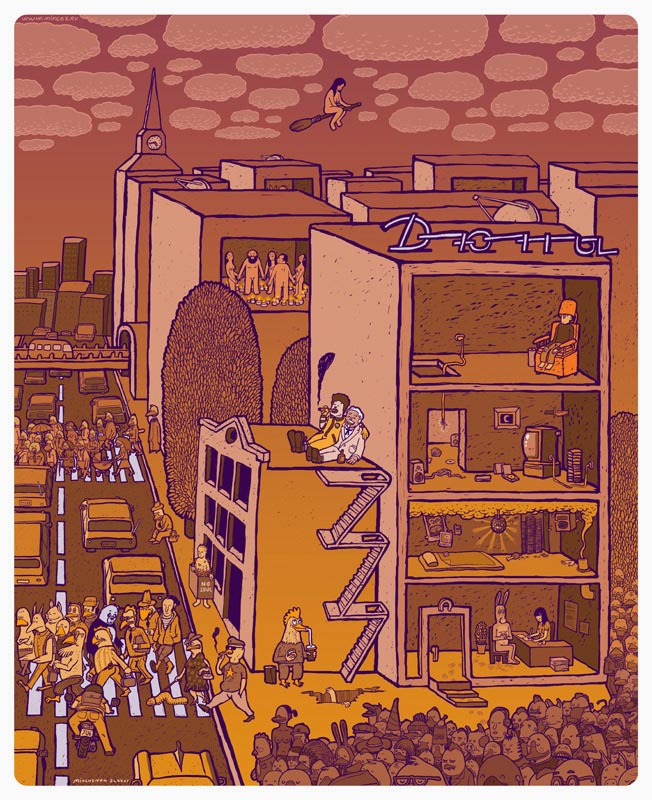
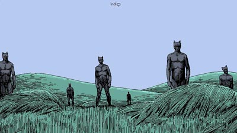
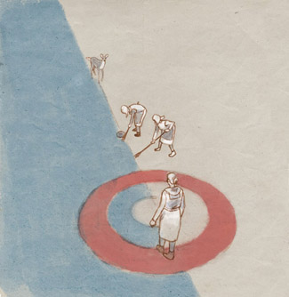
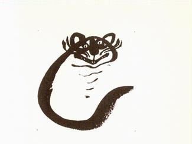
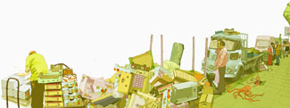
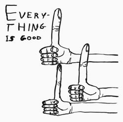

ИЛЛЮСТРАЦИЯ КАК КЕРЛИНГ
И снова здравствуйте-2
Ну, попытка номер три.
Буду стараться писать не реже трех раз в месяц, за каникулы много всего накипело, в частности, я придумал осваивать жанр интервью и несколько других заманух – следите за рекламой. Например, иллюстрация месяца по версии Меламеда:

Ничего нового, но согласитесь, вот этого побольше бы
Или вот: «художник месяца».

Наконец, я буду позволять себе повторяться, повторяться, поскольку многое из того, о чем писал ранее, требует, судя по отзывам, более детального разжевывания. Например, никто не оценил, кажется, сравнение иллюстрации со спортивной игрой Керлинг – а я так не нарадуюсь.

Остальное довольно унылое, можно не ходить
Это жизнерадостная и довольно бессмысленная (если не сюрреалистическая) со стороны игра, но сходство не только в этом. Кто не знает, выглядит она так: некий снаряд с размаху бросают ехать по льду к некой цели, и при этом быстро-быстро трут перед ним специальными щетками, растапливая лед и корректируя таким образом траекторию. Я считаю, процесс изготовления иллюстрации также стоит условно делить на два этапа: бросок и все остальное: детали, фактурки, цвет и прочее. И оба этих этапа одинаково важны и нужны. Слишком часто приходится наблюдать пренебрежение либо тем либо другим. Иллюстрация без размаха, внутренней пружины, навевает уныние; иллюстрация без деталей и внутренней жизни называется наброском и гонорара не заслуживает. Только у самых мощных атлетов хватает силы забросить снаряд до цели без дополнительной суеты.
Май Митурич

Про него отдельный разговор, набираю воздуха
С другой стороны, история знает авторов, целиком полагающихся на щетки. Такие авторы если и начинают с рывка, впоследствии растирают в порошок всякие его следы и полностью меняют курс – зато уж щетками владеют виртуозно.

За что я люблю современную иллюстрацию – что про нее ни напишешь, все будет правдой. Например, «современная иллюстрация – самое интересное на свете занятие» или «современная иллюстрация – полное г.». В общем, вы поняли – оставайтесь с нами.
